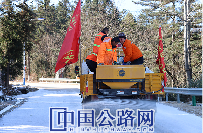

微官网
微官网

元旦前夕，为确保英山境内国省道干线公路安全畅通，为广大人民群众安全便捷出行提供良好的公路路域环境，连日来，英山县公路管理局精心部署，多措并举做好冬季公路养护安全保畅各项工作。
成立以局领导班子为领导小组，全局骨干力量志愿者为队员的应急抢险突击队，制定冬季保畅应急方案，提前部署、提前准备，随时准备投入到应急抢险工作中。
扎实做好日常养护工作，加强安全隐患排查。加强道路养护工作力度，积极开展路面病害处治，对公路、桥涵加大保洁频率，及时清理边沟和路肩的垃圾杂草，确保排水通畅，避免道路出现结冰情况。对管辖内路面、桥梁、涵洞、沿线交通安全设施组织人员定期进行排查，在易结冰、急弯、陡坡、易发生交通事故路段等增设警示标志牌，做到早发现、早提醒、早处理，将安全隐患消除在萌芽状态。
做好冬季应急保畅工作。储备充足的防滑材料、融雪剂、防滑砂等应急物资，合理配置机车辆，做到定车定人，定期检查保养，保证设备的实用性能，确保冬季道路运行安全畅通。
2020年12月29日凌晨，受北方寒潮冷空气影响，英山县境内出现降温降雪恶劣天气，气温达到零下7度，导致国省道小白线桃花冲路段、张胜线吴家山路段、中大线中界岭路段出现积雪结冰现象，车辆无法通行。面对灾情，英山县公路管理局第一时间启动应急预案，组织应急抢险人员和机械上路，全面展开清雪工作， 截止目前，英山公路局已紧急组织突击人员64 人次，投入融雪剂28吨，安全警示标志牌 36块，抢险机械设备 8 台套，对重点危险路段积雪结冰的路面进行撒盐铲雪除冰清理，并设置安全标志提警过往行人和车辆，确保安全畅通。